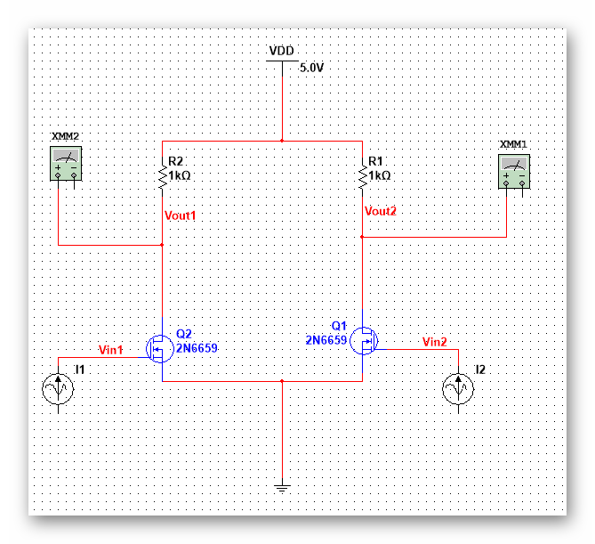

| 模拟集成电路 | |
目录： 一之MOS器件 二之单级放大器 三之差动放大器 四之电流镜偏置 五之实际电路1 六之实际电路2 七之实际电路3 八之实际电路4 九之实际电路5 十之实际电路6 十一之实际电路7 十二之实际电路8 十三之实际电路9 十四之实际电路10 十五之实际电路11 十六之实际电路12 十七之实际电路13 十八之实际电路14 返回页： 类似页：
|
十、差动放大器差动放大器主要的优势在于可以抑制噪声。 基本差动对： 最简单的方法就是直接使用两个共源放大器，vin1和Vin2为差动输入。  但是这种差动对的稳定性较差，Vin对Ids的影响会直接导致输出的差模信号出现失真或者输出偏离。 控制Ids的方法就是在源极串联一个电流源以保证电流的稳定。 差动对的特性描述： 差模特性，M1导通时 ， Vout1=Vdd-Iss*Rd，M2截止，Vout2=Vdd，所以差模特性在Vdd，Vdd-Iss*Rd 共模特性：共模特性就是输入一样，使用二分法就可以，就是电流取半，电阻乘二，然后就可以求解共模特性。 同样，放弃差动对的大信号分析（大信号分析就是以Ids为主线的分析），考虑差动对的小信号分析。 分析的方法就是将Vin2接地，可以得到M2管作为电阻出现在M1的源端，阻值为1/gm2,根据源端反馈可以得到压降。 进而求出Vout1， Vout2是以共栅极驱动M2，可以得到Vout2的表达式和Vout1相反，则可以得到差模增益为-gm*Rd，单边输出时为一半。 这个方法比较复杂，而且要考虑比较多的因素，不是非常常用， 这里有一种更加常用的方法是半边法。 半边法：
|
|---|---|